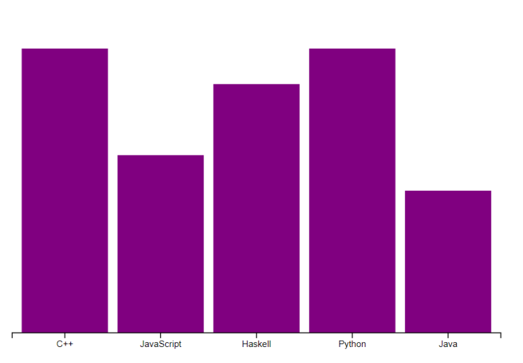
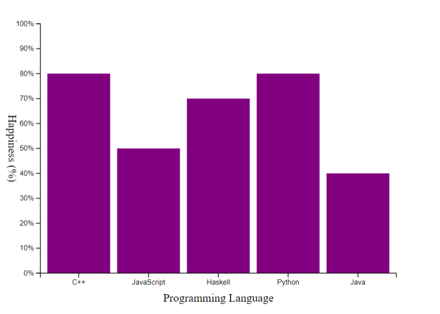

Les bandes des données sont affichées sur le SVG, mais elles se superposent indistinctement, nous allons donc mettre en place la mise à l’échelle des données avec les dimensions du SVG pour pouvoir positionner correctement les bandes.
Commençons donc par créer la fonction de mise à l’échelle de bandes sur l’axe X. Pour les données sur cet axe, nous utilisons des string, nous ne pouvons donc pas donner la portée à la méthode de mise à l’échelle.
Néanmoins, nous pouvons utiliser un tableau contenant toutes les string en paramètre, D3.js s’occupera automatiquement d’attribuer chaque string à une position.
Complétons le code suivant en définissant nous-même la range valide :
See the Pen Untitled by OpenSpirit (@OpenSpirit) on CodePen.
Enchaînons avec l’axe Y cette fois-ci, mais utilisons la méthode de mise à l’échelle linéaire. Les données sur cet axe étant numériques, nous pouvons fournir la portée en paramètre. Complétons cette fois-ci le domain de l’échelle :
See the Pen Untitled by OpenSpirit (@OpenSpirit) on CodePen.
Il est temps de mettre à jour la partie de notre code qui ajoute les bandes au SVG, nous possédons maintenant les fonctions nécessaires pour en définir la taille et les coordonnées.
Les calculs pour l’axe Y peuvent paraître contre-intuitifs. Néanmoins, pour la mise à l’échelle, nous avons dû fournir une portée de sortie inverse, car l’axe Y du SVG est inversé, nous devons donc aussi inverser les calculs lors de la taille des bandes.
Définissons dans le code suivant les positions en utilisant une fonction anonyme et les méthodes de mise à l’échelle respectives pour obtenir les bonnes valeurs :
See the Pen Untitled by OpenSpirit (@OpenSpirit) on CodePen.
Lien ReplitIl ne nous reste plus qu’à ajouter les axes pour compléter notre graphique. Nous allons à nouveau commencer par nous occuper de l’axe X :
See the Pen Untitled by OpenSpirit (@OpenSpirit) on CodePen.
Avec la fonction de mise à l’échelle et axisBottom(), nous avons récupéré la méthode à utiliser pour créer l’axe. Servons-nous-en afin de le positionner sur le SVG :
See the Pen Untitled by OpenSpirit (@OpenSpirit) on CodePen.
Lien Replit Réitérons le processus pour l’axe Y, mais en utilisant la méthode tickFormat() de l’axe pour modifier le label affiché afin d’y ajouter l’unité de mesure.
See the Pen Untitled by OpenSpirit (@OpenSpirit) on CodePen.
Pour la touche finale, nous allons afficher le nom des axes. Pour l’axe Y, il faudra prendre soin d’appliquer une rotation verticale sur le texte, n’oublions pas de prendre en compte cette rotation lorsque nous définirons les coordonnées de cet axe.
Pour définir le texte, vous pourrez directement utiliser la méthode text() au lieu d’utiliser un attribut.
See the Pen Untitled by OpenSpirit (@OpenSpirit) on CodePen.
Lien Replit 